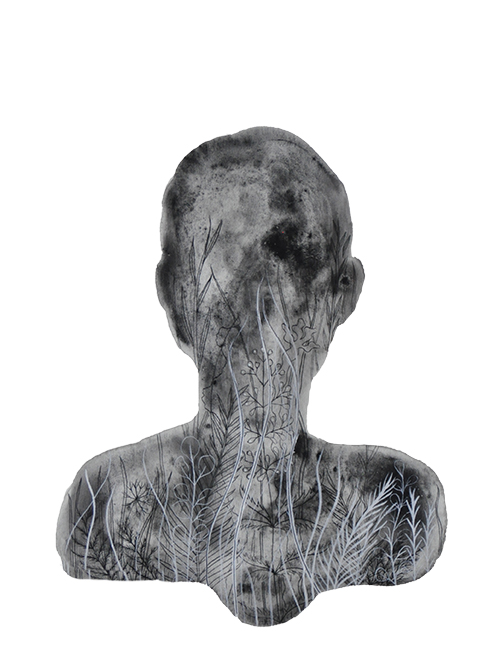
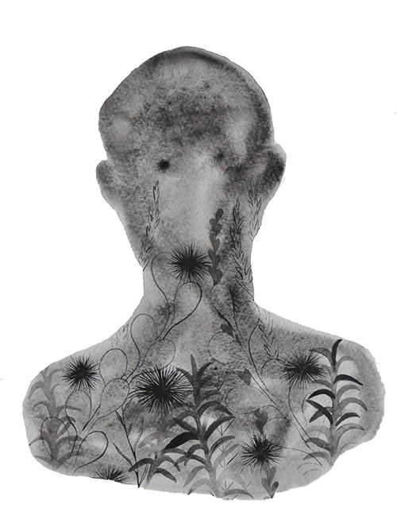

photo by Evan Jenkins
Megan Diddie (b. 1985, Los Angeles, CA) is a Chicago-based artist working with drawing, animation, video, and papermaking. Her work explores relationships between human bodies, plants, landscapes, and built environments. Drawing is the heart of her practice. For Diddie, drawing is a language used to suss out ideas and messages from the unconscious. Many of these ideas come from a need to explore discomfort and anxiety through both represenational and abstract forms. Mixed media and animation is used to find shapes, colors, and forms that are layered to refine or complicate ideas and stories. Her work with video and animation is a way to expand upon drawing and she likes to imbue a sense of humor, play, and sensuality to each piece.
She is the co-founder of Switch Grass Paper a nascent paper making studio.
Artist CV


